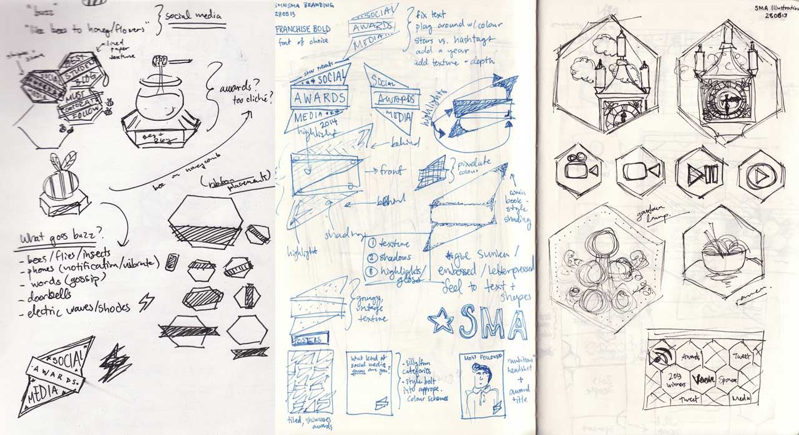
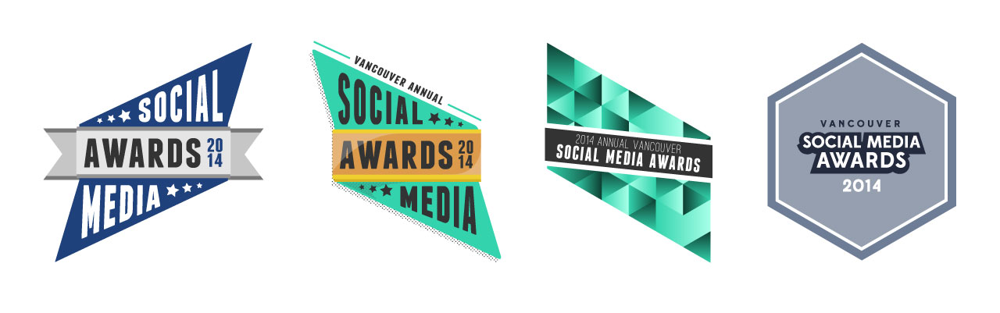
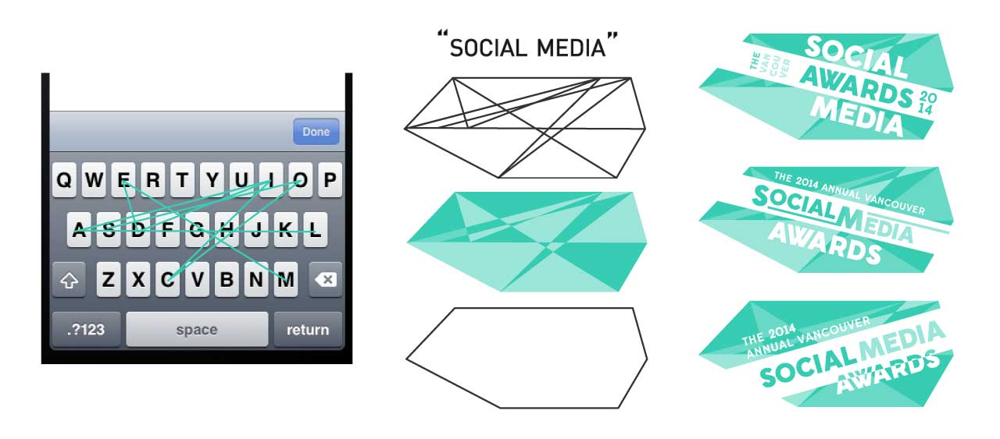
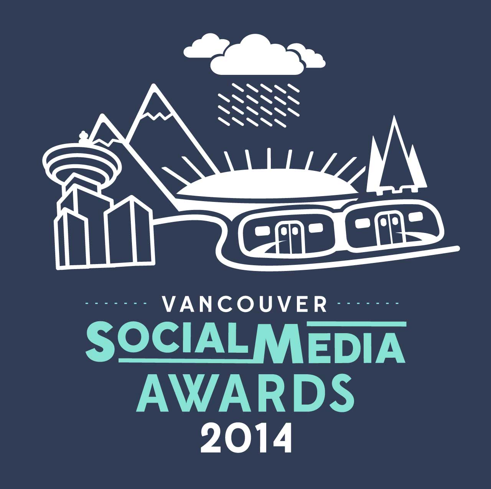
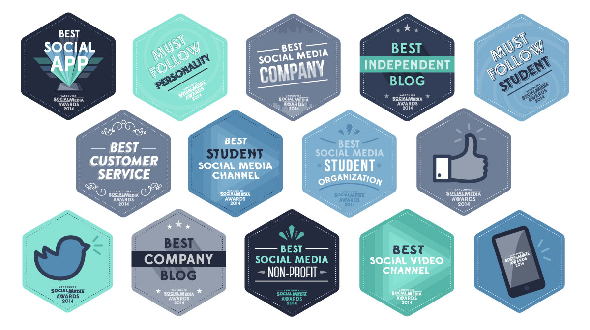

EXPLORATION + PROCESS
The original brief was to design a thematic identity that was “epic” which took inspiration from badge design similar to the Bioshock Infinite logo and general militia uniform. I decided to merge that with a concept of social media in that it creates buzz. Below are sketches that reflect this.
It was a challenge brainstorming connections and conceptualizing ideas that merged the visual aesthetic of the military with the theme of social media in a seamless way. Above were explorations on that through colour, geometry and type.
The first thing that came to mind when I got back to the drawing board was the smartphone. I had recently been utilizing the swipe keyboard on my Android and thought of that place to be an interesting start.
In the end, this idea didn’t fly with the stakeholders as well; I had hit a creative block. I did what I usually do when I hit a mind block– I doodled in my sketchbook. Eventually, I began drawing a simple nature-scene with rain clouds, mountains and trees, which brought me back to the city of Vancouver.
I liked the flow of the varying strokes and decided to illustrate other Vancouver icons and encase them within a hexagon, going back to the "social media creates buzz" concept and making honeycombs.
VISUAL LANGUAGE
The cool colour palette used is sampled from photographs of Vancouver by using the eyedropper tool in Photoshop to get the eight varying tints, tones and shades.
My goal was to create a visual language that was relatable and reflective to social media culture yet completely unique to Vancouver; it had to be shareable, yet feel as you could make your own story from it.
A STORYTELLING WEBSITE

There are three objectives of the website– (1) to share the stories of last year's award ceremony, (2) to encourage others to join and contribute to Vancouver's Social Media Community, and lastly, (3) to convey a bigger and better event for 2014!
ROLES
Brand Development, Artworker, UX/UI Designer
SKILLS HONED
Branding (with a holistic approach), Illustration, Sketching, Iconography, Web Design
TEAM
Mark Woo, Dean Tsatouhas, Diana Chan, Zachary Halvorson
SIDE NOTE
Due to unforeseen circumstances, the event never happened, but I enjoyed every minute working on this project and wanted to demonstrate my prowess in brand development and web design. I hope to advance this project on my own time.